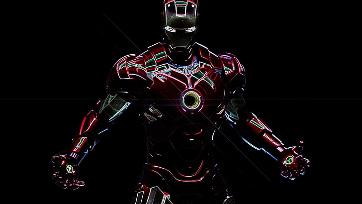

Что тут можно найти?
На нашем сайте вы можете найти всю интересующую вас информацию о знаменитых личностях, об их личной жизни, интересах, а также найти интересные факты

Медиа-личность. Роберт Дауни-младший
Начал актёрскую карьеру ещё ребёнком, сыграв в фильме своего отца «Загон» (1970). Ближе к началу 1990-х Дауни становится востребованным актёром, в частности, благодаря ролям в фильмах «Эйр Америка» (1990), «Большая пена» (1991) и «Прирождённые убийцы» (1994). Наиболее известной и удачной ролью Роберта в XX веке считается роль Чарли Чаплина в одноимённом байопике Ричарда Аттенборо, принёсшая ему премию BAFTA и первую номинацию на «Оскар».
После череды громких скандалов в конце 1990-х, связанных с наркотической зависимостью и тюремным сроком, Дауни вернулся на экраны с второстепенной ролью в телесериале «Элли Макбил», принёсшей ему первый «Золотой глобус» в 2001 году. Далее последовали роли в ряде успешных картин, среди которых — «Готика» (2003), «Поцелуй навылет» (2005) и «Зодиак» (2007). В 2008 году выходят «Солдаты неудачи», принёсшие Дауни вторую номинацию на «Оскар», и «Железный человек», положивший начало масштабной медиафраншизы под названием «Кинематографическая вселенная Marvel». В последнем Дауни исполнил роль супергероя Тони Старка/Железного человека — эту же роль он вскоре повторил в фильмах «Невероятный Халк» (2008), «Железный человек 2» (2010), «Мстители» (2012), «Железный человек 3» (2013), «Мстители: Эра Альтрона» (2015), «Первый мститель: Противостояние» (2016), «Человек-паук: Возвращение домой» (2017), «Мстители: Война бесконечности» (2018) и «Мстители: Финал» (2019). Также известен благодаря роли Шерлока Холмса в фильмах Гая Ричи «Шерлок Холмс» (2009) и «Шерлок Холмс: Игра теней» (2011). За роль в первой части был удостоен второго «Золотого глобуса».
В 2013, 2014 и 2015 годах Дауни возглавил список самых высокооплачиваемых актёров Голливуда по версии Forbes[1].
В августе 2018 года Роберт Дауни — младший занял третье место в рейтинге самых высокооплачиваемых актёров года по версии журнала Forbes. За 12 месяцев он заработал $81 млн[2].